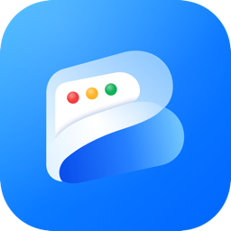
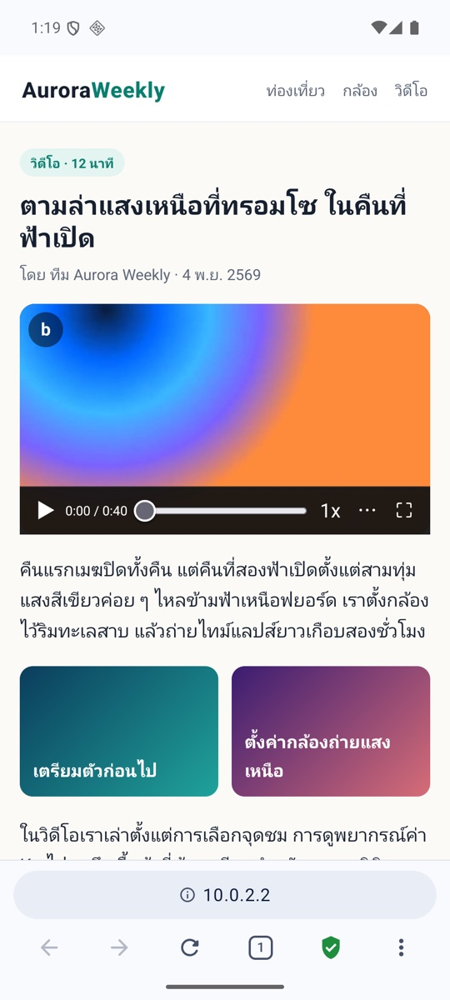
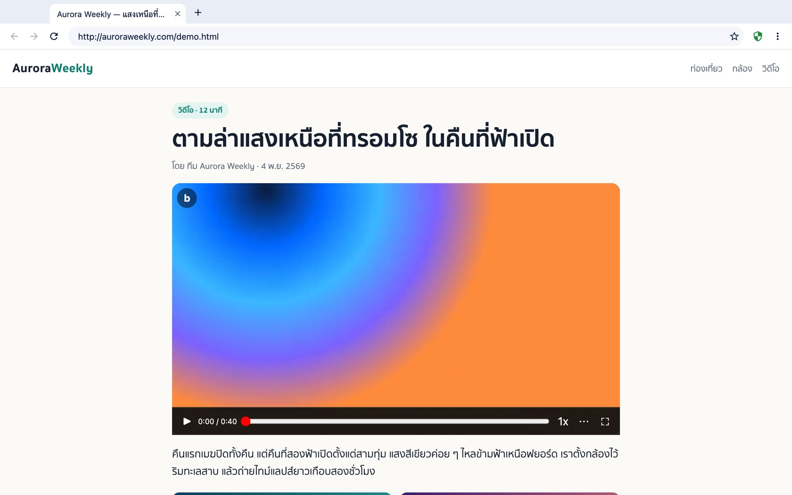
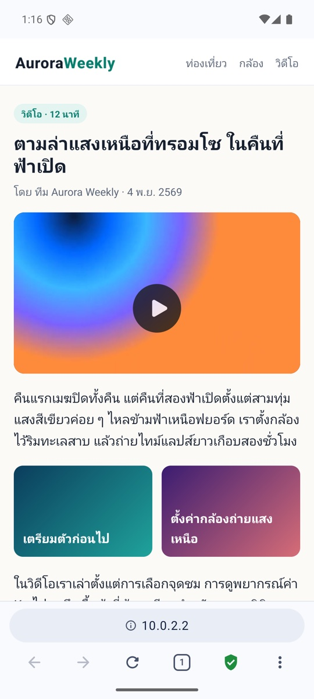
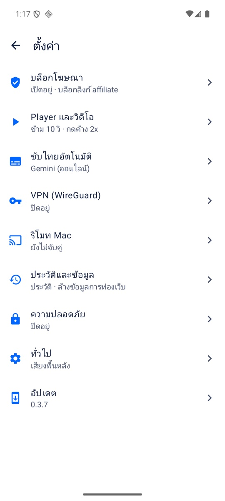
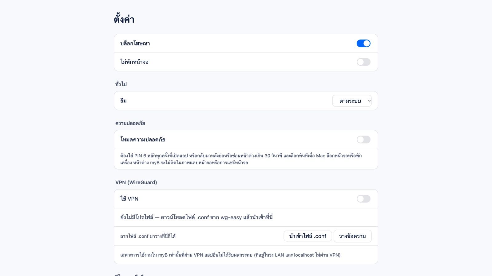

myBmyB เป็นเบราว์เซอร์ภาษาไทยสำหรับ Android และ Mac บล็อกโฆษณาในตัว และมี player ของตัวเองบนวิดีโอทุกเว็บ แตะสองครั้งเพื่อข้าม กดค้างเพื่อดูเร็วขึ้น ใช้ฟรี ไม่ต้องสมัคร

เว็บไหนมีวิดีโอ myB จะวางปุ่ม b ไว้ที่มุมซ้ายบน ใช้ท่าเดิมได้ทุกเว็บ ปุ่มของเว็บเองก็ยังกดได้ตามปกติ
ฝั่งซ้ายถอย ฝั่งขวาข้าม ครั้งละ 10 วินาที แตะต่อเพื่อข้ามเพิ่ม
เล่นเร็ว 2x ระหว่างที่ค้างไว้ ปล่อยแล้วกลับเป็นปกติ
เลื่อนเวลาไปยังจุดที่ต้องการ ปัดสุดจอเท่ากับ 2 นาที
บีบออกเพื่อเต็มจอ บีบเข้าเพื่อออก หรือเปิดภาพซ้อนภาพ


หน้าตาเดียวกันบน Mac และมือถือ บน Mac ใช้คีย์บอร์ดได้ด้วย ← → เพื่อข้าม Space เพื่อเล่น/หยุด F เพื่อเต็มจอ
ทุกอย่างอยู่ในแอปเดียว เปิด/ปิดได้เองในหน้าตั้งค่า
ใช้ AdGuard ร่วมกับตัวกรองของ myB ที่ทำมาสำหรับเว็บไทย ทั้งแบนเนอร์คาสิโนและโฆษณาคั่นก่อนวิดีโอ ปิดเฉพาะเว็บได้จากปุ่มโล่
Android และ Macสร้างซับไทยจากเสียงของวิดีโอที่กำลังเล่น ใช้ได้กับวิดีโอที่ไม่มีซับ
Android 10 ขึ้นไปนำเข้า WireGuard จาก wg-easy ด้วยการสแกน QR หรือไฟล์ .conf เฉพาะ myB ที่วิ่งผ่าน VPN แอปอื่นไม่ได้รับผล ถ้า VPN หลุด myB จะหยุดโหลดทันที
Android และ Macชี้มือถือเพื่อเลื่อนเคอร์เซอร์ พิมพ์จากคีย์บอร์ดมือถือ และคุมวิดีโอเต็มจอบน Mac ส่งหน้าเว็บจากมือถือไปเปิดบน Mac ได้ทันที ทุกข้อความเข้ารหัสตลอดทาง
Android + Macตั้ง PIN 6 หลัก myB จะล็อกเมื่อเปิดแอปหรือกลับมาหลังพักไว้ บน Mac ล็อกตามหน้าจอ และไม่ติดในภาพแคปหน้าจอ
Android และ Macหน้าเว็บเปิดลิงก์ Shopee, TikTok หรือ Lazada เองไม่ได้ myB บอกว่าบล็อกอะไรไป และกดเปิดเองได้ถ้าต้องการไปจริง
Androidแบ่งเป็นหมวด อ่านง่าย ไม่ต้องหาเมนูซ่อน


myB อัปเดตตัวเองได้ เช็กวันละครั้ง หรือกดเช็กเองที่ ตั้งค่า → อัปเดต
xattr -dr com.apple.quarantine /Applications/myB.app